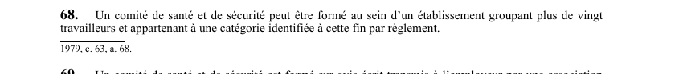

art-68-LSST : formation du comité SST
Un article du wiki ⚖️ Recueil législatif
En bref
Un comité de santé et de sécurité peut être formé au sein d'un établissement groupant plus de vingt travailleurs. Il s'agit d'une obligation.
- Catégorie identifiée par règlement.
🌐 LegisQuébec · 📄 PDF officiel (page 24)
Texte officiel : capture du PDF
{kind=link}

Toucher l'image pour l'agrandir🔗 Ouvrir a cette page : LSST.pdf : page 24 · texte a jour au 26 mars 2024
Voir aussi
- art. 66 : interdiction ou restriction d'usage · faculté : lorsque la Commission est d'avis qu'un produit, procédé ou contaminant peut mettre en danger la santé ou la sécurité d'un travailleur, elle peut en prohiber ou restreindre la fabrication, la fourniture ou l'utilisation aux conditions qu'elle détermine.
- art. 67 : étiquetage des matières dangereuses · obligation : un fournisseur doit voir à ce qu'une matière dangereuse qu'il fournit soit étiquetée conformément aux règlements ; à défaut de règlement, l'étiquette indique au moins la composition, les dangers et les mesures d'urgence, sans obligation de mentionner les secrets de fabrication.
- art. 69 : constitution du comité par avis · faculté : le comité est formé sur avis écrit de l'association accréditée, d'au moins 10 % des travailleurs ou de l'employeur, une copie étant transmise à la Commission qui peut elle-même exiger la formation d'un comité.
- art. 70 : nombre de membres du comité · obligation : le nombre de membres d'un comité est déterminé par règlement compte tenu de la catégorie à laquelle appartient l'établissement.
- ↑ Loi : LSST
Pages qui pointent ici (28)
- 🎯 Démarrage rapide, direction et RH Droit du travail
- art-141-RSST Sécurité industrielle
- art-150-LMRSST : modifie l'art. 68 et 70 LSST Recueil législatif
- art-51-11-LSST Ergonomie
- art-51-11-LSST Hygiène industrielle
- art-51-11-LSST Sécurité industrielle
- art-51-LSST Ergonomie
- art-51-LSST Hygiène industrielle
- art-51-LSST Sécurité industrielle
- art-51-LSST Toxicologie
- art-66-LSST : interdiction ou restriction d'usage Recueil législatif
- art-67-LSST : étiquetage des matières dangereuses Recueil législatif
- art-69-LSST : constitution du comité par avis Recueil législatif
- art-70-LSST : nombre de membres du comité Recueil législatif
- art-81-LSST : protection du membre du comité Recueil législatif
- art-81.18-LSST : disposition abrogée Recueil législatif
- art-82-LSST : pluralité de comités par entente Recueil législatif
- art-83-LSST : droits des comités multiples Recueil législatif
- art-84-LSST : désignation dans comités multiples Recueil législatif
- Comité SST Recueil législatif
- Index par profil Recueil législatif
- LMRSST : Chapitre II : Modifications à la LSST Recueil législatif
- LSST : Chapitre V : Comité de santé et de sécurité Recueil législatif
- LSST, droits et obligations Droit du travail
- Mécanismes de prévention LMRSST en mine Droit du travail
- Obligations de l'employeur Droit du travail
- PDFs de jurisprudence et de doctrine Recueil législatif
- Régime CNESST Droit du travail